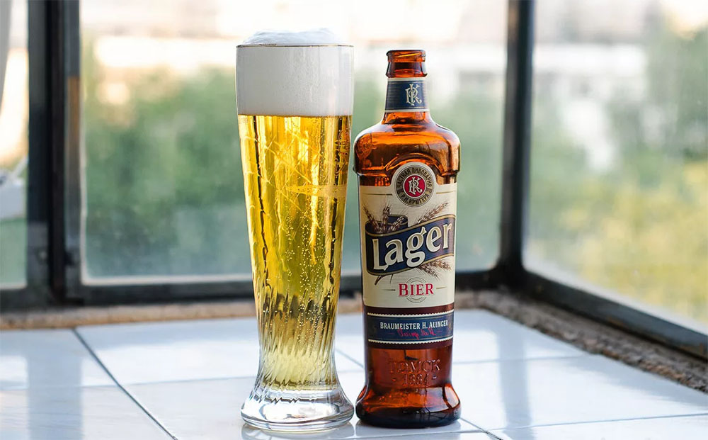
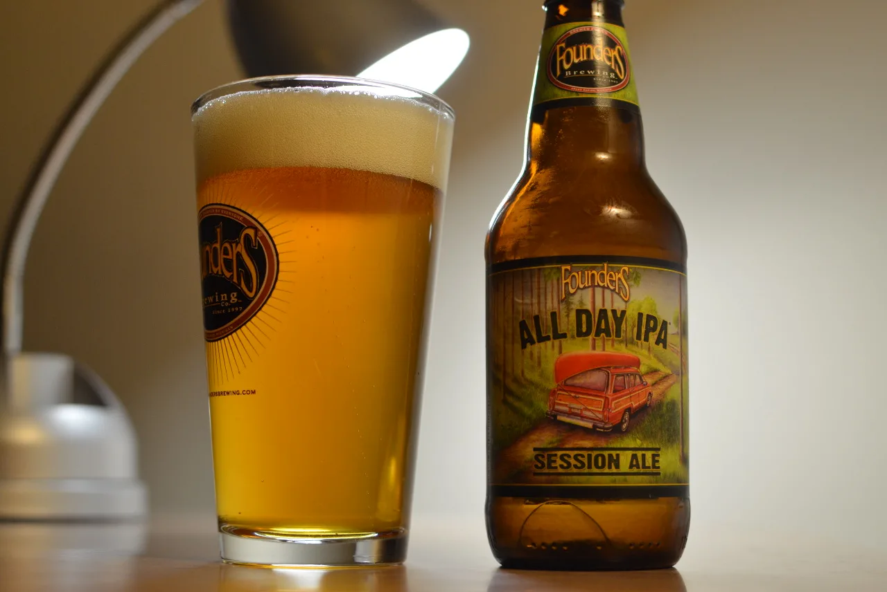
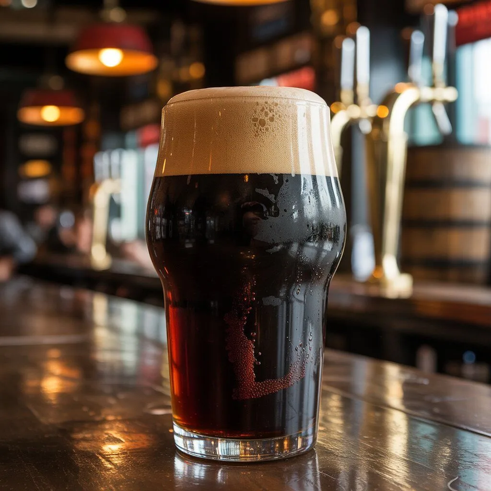

Лагер
Самый популярный тип пива в мире. Низовое брожение при 6–12 °C.
- Цвет: от соломенного до янтарного
- Крепость: 4–6 %
- Примеры: Pilsner, Helles, Bock

Самый популярный тип пива в мире. Низовое брожение при 6–12 °C.

India Pale Ale — много хмеля, горечь и цитрусовые ноты.

Тёмное плотное пиво с обжаренным солодом.